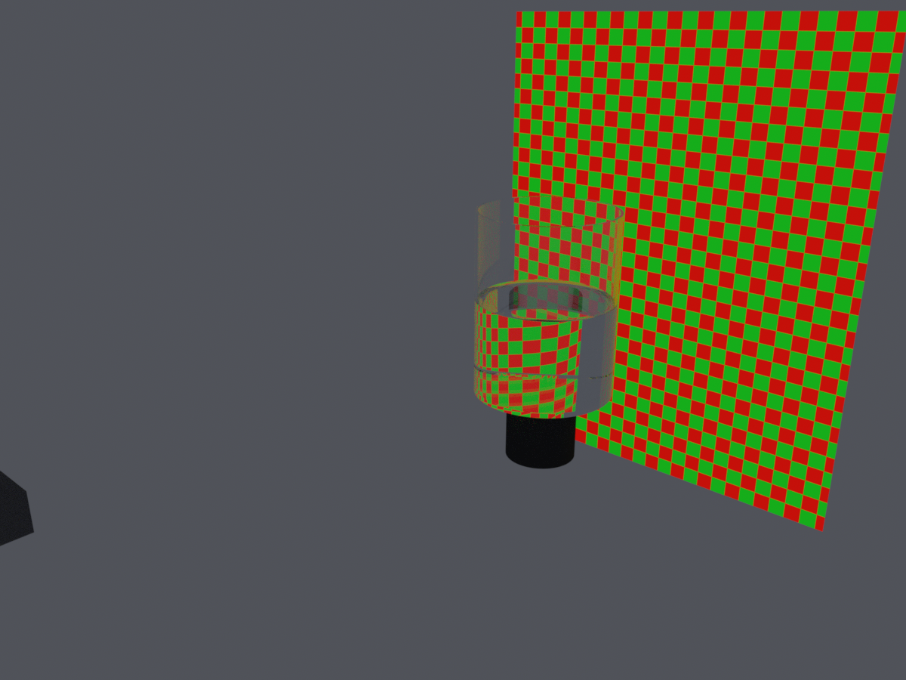
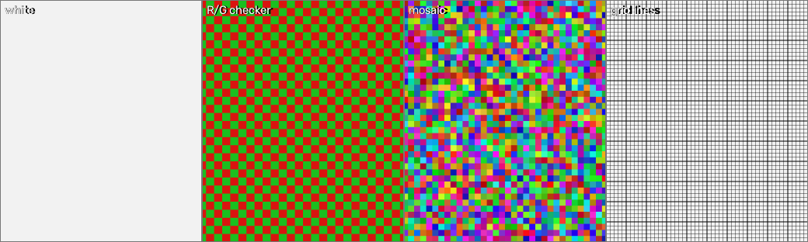
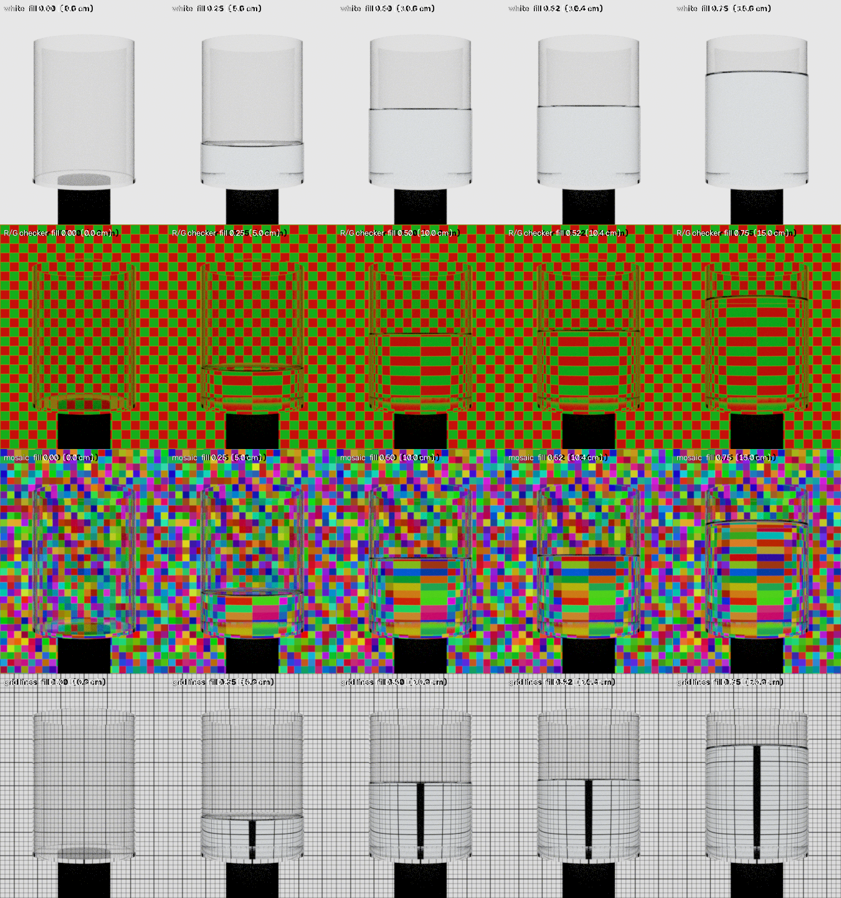
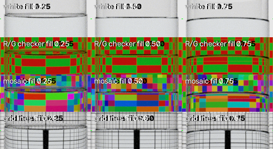
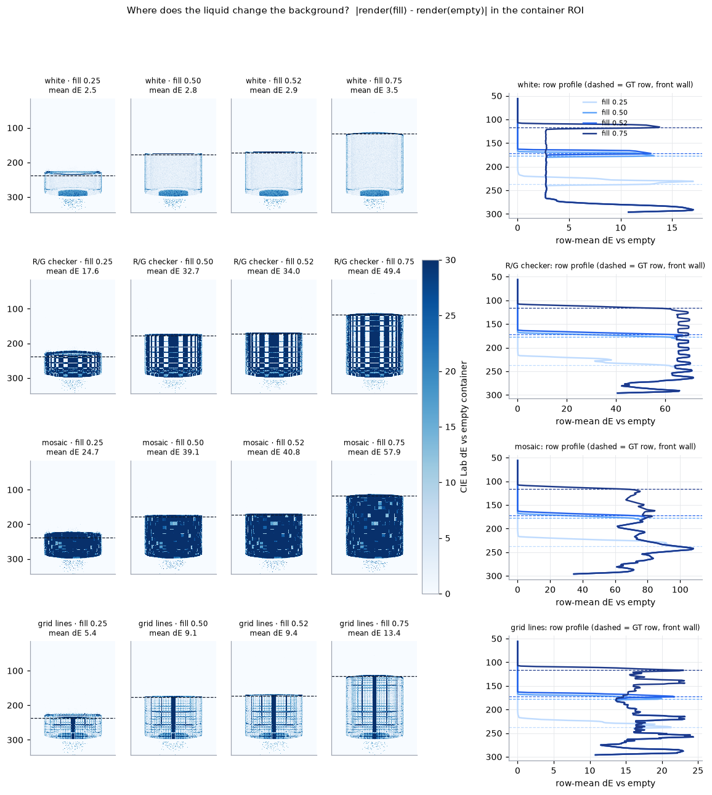
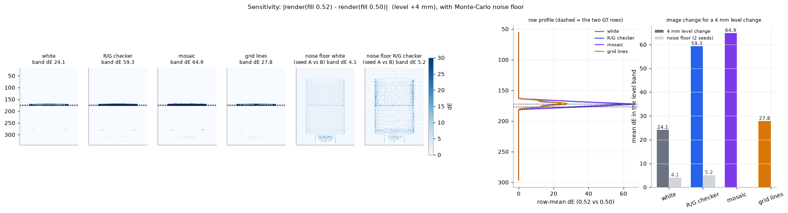
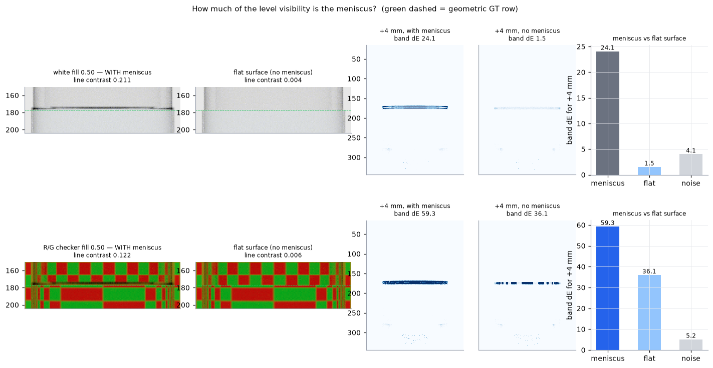
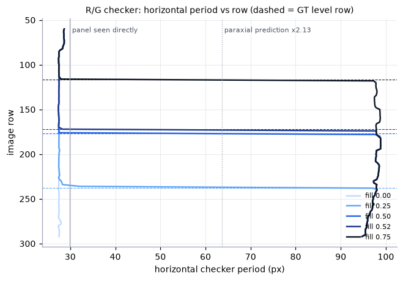
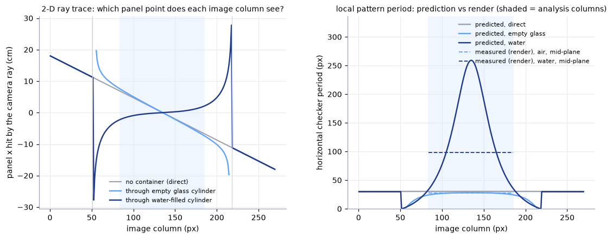

| 参数 | 值 |
|---|---|
| 容器内径 / 内高 / 壁厚 / 底厚 (cm) | 15.0 / 20.0 / 0.3 / 0.5 |
| 玻璃 η / 水 η | 1.5 / 1.333 |
| 水吸收 σ_a (R,G,B) /cm | [0.0035, 0.0015, 0.0003] |
| 弯月面 | h=0.30 cm, l_c=0.27 cm（另渲染平液面对照） |
| 相机位置 (x,y,z) cm / fov | [0.0, -60.0, 10.25] / 24.0°（横向；竖向 ≈31.6°） |
| 发光板 距轴 / 尺寸 (cm) / 亮度 | 25.0 / 50.0 × 60.0 / 线性 0.8 |
| 容器包围框 (行上,行下,列左,列右) | (55, 304, 51, 218) |
| 分析 ROI 行 / 列（容器中央 60% 列） | (56, 297) / (84, 185) |
| 积分器 / 采样 | volpath maxdepth 64 / zsobol 64 spp, gaussian filter |





| 图案 | fill | 液位 cm | GT 行(近) | GT 行(远) | ΔE 腔内均值 | ΔE 液面以下 | ΔE 液面以上 | 过渡行 | 过渡−GT近 (px) | 过渡−GT远 (px) | 单图液位线对比度 | 渲染秒 |
|---|---|---|---|---|---|---|---|---|---|---|---|---|
| white | 0.25 | 5.0 | 237.5 | 224.7 | 2.47 | 6.78 | 0.01 | 225 | -12.5 | +0.3 | 0.153 | — |
| white | 0.50 | 10.0 | 177.0 | 177.6 | 2.82 | 4.76 | 0.01 | 170 | -7.0 | -7.6 | 0.211 | — |
| white | 0.52 | 10.4 | 172.1 | 173.9 | 2.86 | 4.69 | 0.12 | 165 | -7.1 | -8.9 | 0.209 | — |
| white | 0.75 | 15.0 | 116.5 | 130.6 | 3.53 | 4.15 | 1.97 | 110 | -6.5 | -20.6 | 0.234 | — |
| R/G checker | 0.25 | 5.0 | 237.5 | 224.7 | 17.63 | 60.49 | 0.01 | 224 | -13.5 | -0.7 | 0.152 | — |
| R/G checker | 0.50 | 10.0 | 177.0 | 177.6 | 32.67 | 63.69 | 0.01 | 174 | -3.0 | -3.6 | 0.122 | — |
| R/G checker | 0.52 | 10.4 | 172.1 | 173.9 | 34.04 | 63.92 | 0.19 | 169 | -3.1 | -4.9 | 0.101 | — |
| R/G checker | 0.75 | 15.0 | 116.5 | 130.6 | 49.36 | 64.71 | 11.70 | 114 | -2.5 | -16.6 | 0.089 | — |
| mosaic | 0.25 | 5.0 | 237.5 | 224.7 | 24.68 | 78.91 | 0.02 | 224 | -13.5 | -0.7 | 0.019 | — |
| mosaic | 0.50 | 10.0 | 177.0 | 177.6 | 39.11 | 76.56 | 0.02 | 175 | -2.0 | -2.6 | 0.284 | — |
| mosaic | 0.52 | 10.4 | 172.1 | 173.9 | 40.76 | 76.88 | 0.20 | 170 | -2.1 | -3.9 | 0.008 | — |
| mosaic | 0.75 | 15.0 | 116.5 | 130.6 | 57.90 | 76.09 | 13.25 | 115 | -1.5 | -15.6 | 0.249 | — |
| grid lines | 0.25 | 5.0 | 237.5 | 224.7 | 5.39 | 17.80 | 0.01 | 225 | -12.5 | +0.3 | 0.116 | — |
| grid lines | 0.50 | 10.0 | 177.0 | 177.6 | 9.10 | 17.27 | 0.01 | 171 | -6.0 | -6.6 | 0.180 | — |
| grid lines | 0.52 | 10.4 | 172.1 | 173.9 | 9.42 | 17.28 | 0.12 | 167 | -5.1 | -6.9 | 0.209 | — |
| grid lines | 0.75 | 15.0 | 116.5 | 130.6 | 13.36 | 17.23 | 3.82 | 112 | -4.5 | -18.6 | 0.285 | — |

| 图案 | ΔE 腔内均值 | ΔE 液位带内均值 | 行均 ΔE 峰值 | ΔE>5 像素占比 | 差分峰值行 | 两 GT 行 | 噪声底 带内 ΔE | 噪声底 腔内 ΔE | SNR(带) |
|---|---|---|---|---|---|---|---|---|---|
| white | 0.91 | 24.09 | 24.1 | 2.9% | 172 | 177.0 / 172.1 | 4.06 | 2.19 | 6 |
| R/G checker | 2.27 | 59.32 | 59.3 | 4.1% | 172 | 177.0 / 172.1 | 5.15 | 2.28 | 12 |
| mosaic | 2.54 | 64.86 | 65.3 | 4.2% | 173 | 177.0 / 172.1 | — | — | — |
| grid lines | 1.05 | 27.81 | 27.8 | 3.6% | 172 | 177.0 / 172.1 | — | — | — |

| 图案 | 液位线对比度（有弯月面） | 液位线对比度（平液面） | +4 mm 带内 ΔE（有弯月面） | +4 mm 带内 ΔE（平液面） | 噪声底 |
|---|---|---|---|---|---|
| white | 0.211 | 0.004 | 24.09 | 1.55 | 4.06 |
| R/G checker | 0.122 | 0.006 | 59.32 | 36.05 | 5.15 |

| fill | 板直视 横向周期 px | 透过空气段 | 透过液体段 | 液体/空气 | 液体/直视 | 空气/直视 | 竖向 空气 | 竖向 液体 | 竖向比 |
|---|---|---|---|---|---|---|---|---|---|
| 0.00 | 29.9 | 27.5 | — | — | — | 0.92 | 29.5 | — | — |
| 0.25 | 29.9 | 27.6 | 96.8 | 3.51 | 3.24 | 0.92 | 29.6 | 30.0 | 1.01 |
| 0.50 | 29.9 | 27.6 | 97.6 | 3.54 | 3.27 | 0.92 | 29.6 | 30.9 | 1.05 |
| 0.52 | 29.9 | 27.6 | 97.6 | 3.54 | 3.27 | 0.92 | 30.2 | 30.9 | 1.03 |
| 0.75 | 29.9 | 28.1 | 97.7 | 3.48 | 3.27 | 0.94 | 29.2 | 31.0 | 1.06 |

| 量 | 二维追迹预测 | 渲染实测（中平面行带） |
|---|---|---|
| 板直视横向周期 px | 29.9 | 29.9 |
| 透过空容器（空气段） | 27.8 | 27.5 |
| 透过液体段 | 98.4 | 98.7 |
| 液体/空气 周期比 | 3.54 | 3.59 |
| 空气/直视 周期比 | 0.93 | 0.92 |
| 图像中心局部放大（液体/直视） | 8.65 | 见上图曲线 |